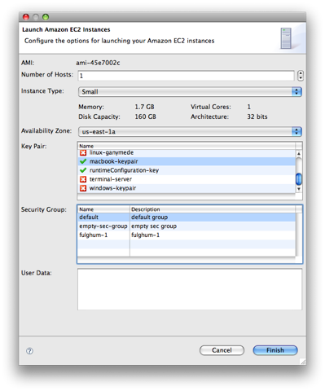

Launching EC2 instances is easy with the AWS Toolkit's launch wizard.
Open the AMI Browser view provided by the AWS Toolkit for Eclipse and find the AMI you want to launch. You can use the search box in the top right corner of the AMI Browser view to find the AMIs you're looking for.
Once you've found your AMI, right-click it and select Launch from the context menu. The launch wizard walks you through launching a new EC2 instance. Select how many instances you want launched and the key pair and security group that you want them launched with. If you haven't created any key pairs or security groups yet, you can create them directly from the launch wizard by right-clicking the appropriate widgets to access the context menus.

After you've selected your launch options and finished the wizard, you should see your new instance listed as pending in the EC2 Instances view. This means that EC2 is now launching your new instance; in a few minutes you will have full access to it.